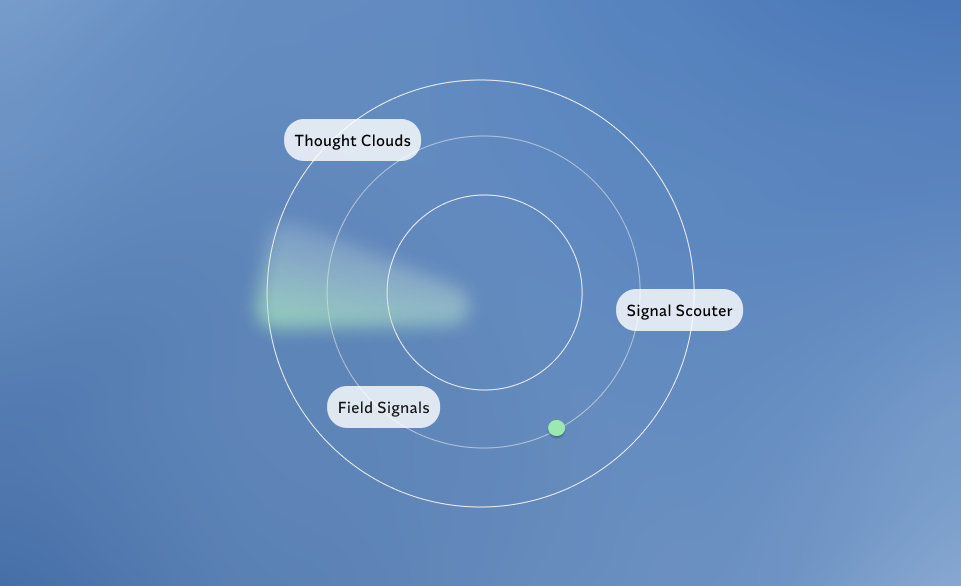
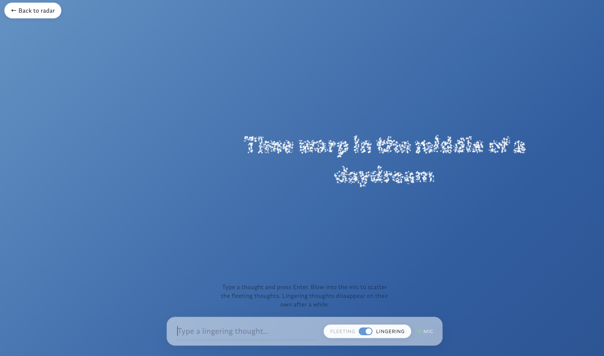

TOOLKIT: Figma, HTML/CSS, JavaScript, Vite, MediaPipe, Google Antigravity, Cursor, Google AI Studio

Thought Clouds is a digital sky where fleeting whispers and lingering curiosities take the form of clouds. It invites you to write your thoughts and watch them take shape in the sky. Fleeting thoughts scatter into the ether with a gentle breath into the microphone. Lingering thoughts drift longer, slow and stubborn, until distance makes them unreadable. Above it all, the sky keeps breathing, shifting colours from dusk to dawn.

Field Signal is an antenna that catches ambient nature sounds such as bird calls, wind, and water. As you move your finger further from the screen, the sound becomes wider and more ambient. Moving closer makes the sound sharp and rhythmic. Trace a circle in the air to tune into different frequencies.
Signal Scouter is a small archaeology of memory, like sifting through sand for what you forgot you buried. Sweep your hands across the screen, and fragments of memory surface in and out of focus. Hold your hands perfectly still to lock the focus and let the memory form. Find the right coordinates and a hazy picture begins to develop, slowly sharpening into recognition.
Previous Project